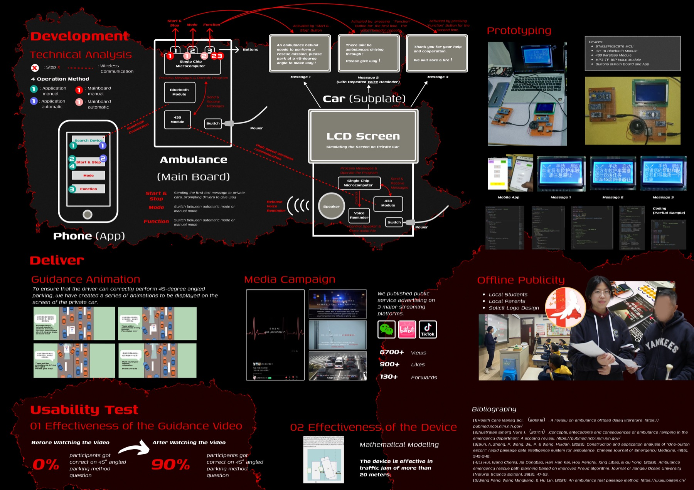
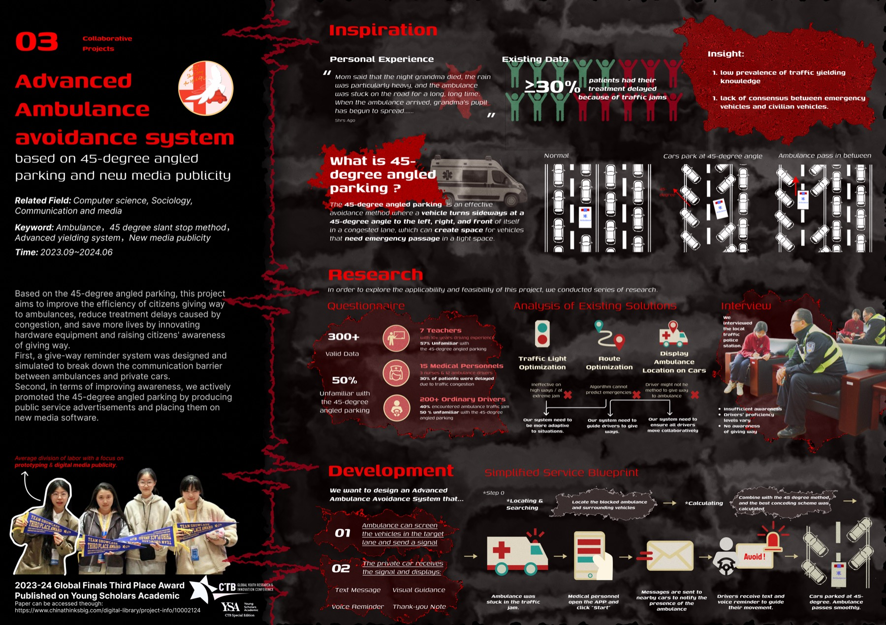

INDEX / 03
Advanced Ambulance Avoidance System
Research + Hardware · 2023.09 — 2024.06
Led a team tackling ambulance delays: 300+ surveys, interviews with traffic police and medical staff, a connected give-way device (STM32, Bluetooth, 433MHz, in-car LCD), and a new-media campaign teaching 45-degree angled parking — raising test accuracy from 0% to 90%, 6,700+ views. Paper published on Young Scholars Academic.

